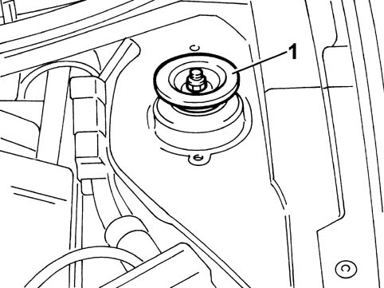
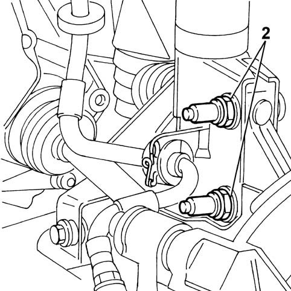
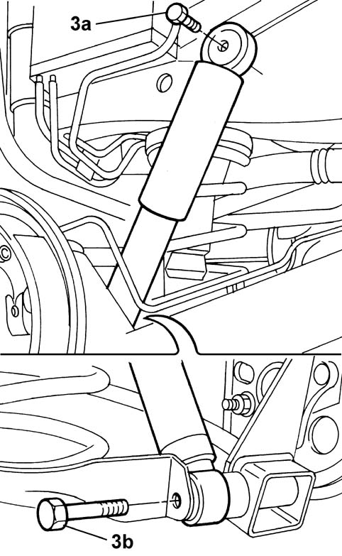
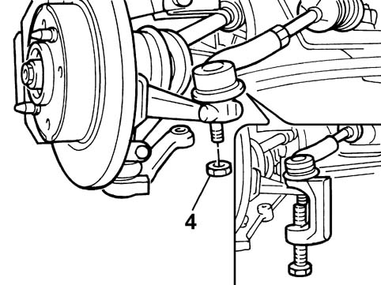
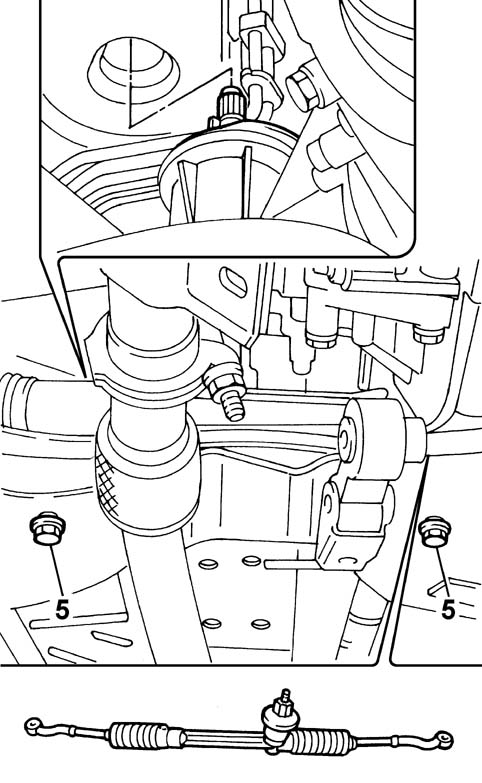
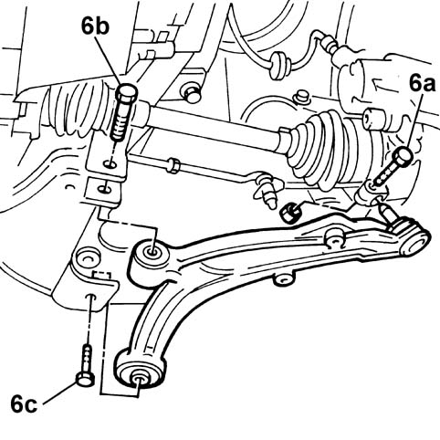
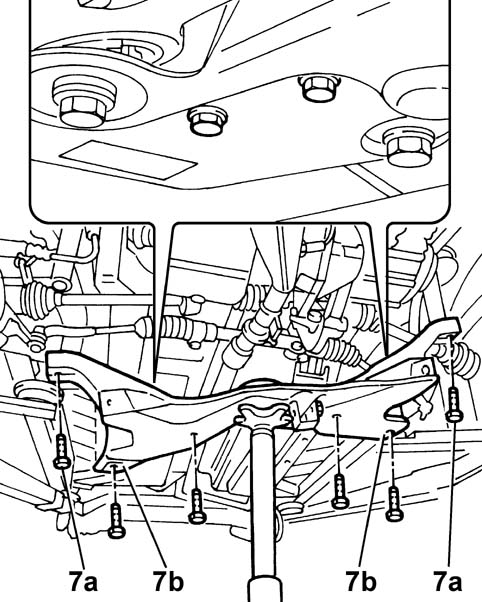
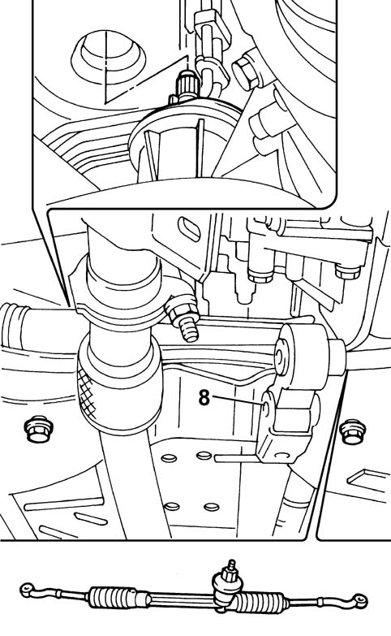
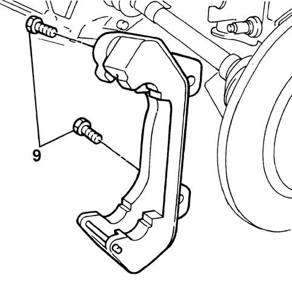

4410OA CHECKS ON CORRECT TIGHTENINGS FOR FRONT SUSPENSION
- Path
- Test > 44 SUSPENSION AND WHEELS > 4410 FRONT SUSPENSION > 4410O FRONT SUSPENSION TESTS > 4410OA CHECKS ON CORRECT TIGHTENINGS FOR FRONT SUSPENSION
- Kind
- test / check procedure
- Applies to
- all engines; all production periods
- Interactive page
- https://sloeber94.github.io/elrnDB-fPnd/en/#/169001027
Applies to: all engines; all production periods
- Position the vehicle on a two column lift.
1. Using a torque wrench set to the recommended value, check that the upper shock absorber buffer is tightened to the recommended torque.
Fastening | Component | Diameter | Value (daNm) | |
|---|---|---|---|---|
1 | Nut | Upper turret | M12 | 4,5 |

- Raise the vehicle and check that the various front suspension fastenings are correctly tightened.
2. Using a torque wrench calibrated to the recommended value, check that the fastenings between the shock absorber and the steering knuckle are tightened to the torque given below.
Fastening | Component | Diameter | Value (daNm) | |
|---|---|---|---|---|
2 | Bolt | Steering knuckle | M10 | 7,5 |

3. Using a torque wrench calibrated to the recommended value, check that the fixing nuts between the connecting rod and the shock absorber mounting (3a) and between the connecting rod and the anti-roll bar (3b) are tightened to the torque given below.
Fastening | Component | Diameter | Value (daNm) | |
|---|---|---|---|---|
3a | Nut | Shock absorber mounting | M10 | 5 |
3b | Nut | Anti-roll bar | M10 | 5 |

4. Using a torque wrench calibrated to the recommended value, check that the fixing nut between the power assisted steering box rod and the front steering knuckle are tightened to the torque given below.
Fastening | Component | Diameter | Value (daNm) | |
|---|---|---|---|---|
4 | Nut | Power assisted steering box rod | M10 | 4 |

5. Using a torque wrench calibrated to the recommended value, check that the fastening between the power assisted steering box and the crossmember are tightened to the torque given below.
Fastening | Component | Diameter | Value (daNm) | |
|---|---|---|---|---|
5 | Bolt | Power assisted steering box | M12x1.25 | 6,5 |

6. Using a torque wrench calibrated to the recommended value, check that the fastenings between the track control arm and the front steering knuckle (6a) and between the track control arm and the crossmember (6b) and between the track control arm (6c) are tightened to the torque given below.
Fastening | Component | Diameter | Value (daNm) | |
|---|---|---|---|---|
6a | Bolt | Front pillar | M8 | 3,2 |
6b | Bolt | Suspension arm to crossmember front bush | M12 | 12 |
6c | Bolt | Bodyshell | M12 | 10 |

7. Using a torque wrench calibrated to the recommended value, check that the front fixing bolts between the crossmember and the bodyshell side member (7a) and the rear fastening between the crossmember and the bodyshell side member (7b) are tightened to the torque given below.
Fastening | Component | Diameter | Value (daNm) | |
|---|---|---|---|---|
7a | Bolt | Front fastening on bodyshell side member | M12 | 12 |
7b | Bolt | Rear fastening on bodyshell side member | M14 | 16,5 |

8. Using a torque wrench calibrated to the recommended value, check that the fixing bolt between the crossmeber and the engine suspension connecting rod (8) is tightened to the torque given below.
Fastening | Component | Diameter | Value (daNm) | |
|---|---|---|---|---|
8 | Bolt | Crossmember | M12 | 8 |

9. Using a torque wrench calibrated to the recommended value, check that the bolt fixing the brake caliper to the steering knuckle (9) is tightened to the torque given below.
Fastening | Component | Diameter | Value (daNm) | |
|---|---|---|---|---|
9 (Petrol Versions) | Bolt | Steering knuckle | M10x1.25 | 5,5 |
9 (Diesel Versions) | Bolt | Steering knuckle | M10x1.25 | 10,5 |
